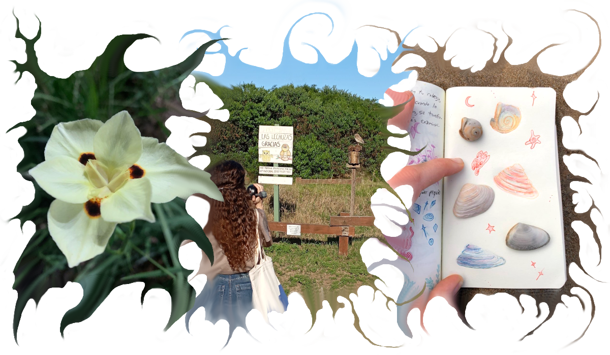

arbstein es un mix entre mi nombre y apellido; quizás es una forma de reapropiarme de mi identidad, creando otra forma de mostrar cómo me veo y siento. En un mundo en donde la sobreexposición digital es desbordante, elijo compartir pocas cosas personales. Creo que la privacidad es un derecho que lentamente estamos perdiendo y que en estos tiempos es realmente valioso. Y si bien decido no mostrar mi día a día, hay cosas que naturalmente suceden, como mis sentimientos que se filtran en cada obra: en el uso de colores brillantes cuando mis ánimos están en el subsuelo, en los silencios visuales entre los dibujos cuando me gana la introspección, o los sonidos chispeantes que se generan alrededor de las especies que danzan en el aire.
Me interesa la fusión que hay entre lo digital y analógico. No sé si es por "herencia" familiar pero desde que tengo recuerdo siempre tuve mucho interés por la biología, el medioambiente y la preservación del planeta en el que vivimos. Al mismo tiempo, me siento atraída por las herramientas tecnológicas que tenemos actualmente, como por ejemplo los software para esculpir en 3D, para generar texturas visuales y también sonoras. El hecho de tener una formación académica en la Universidad Nacional de las Artes me ayudó a integrar recursos de la pintura y el dibujo en mis procesos digitales. Y tener acceso a este tipo de herramientas teóricas y prácticas, diversas e híbridas, me permite explorar ecosistemas ficticios habitados por seres que podrían ser catalogados tanto como plantas o como animales, e imaginar cómo podrían desarrollarse y subsistir en climas y paisajes diferentes a los nuestros.
 <┉┉┉⋅